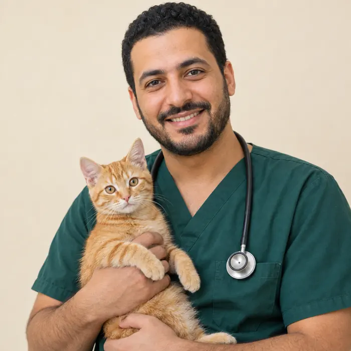
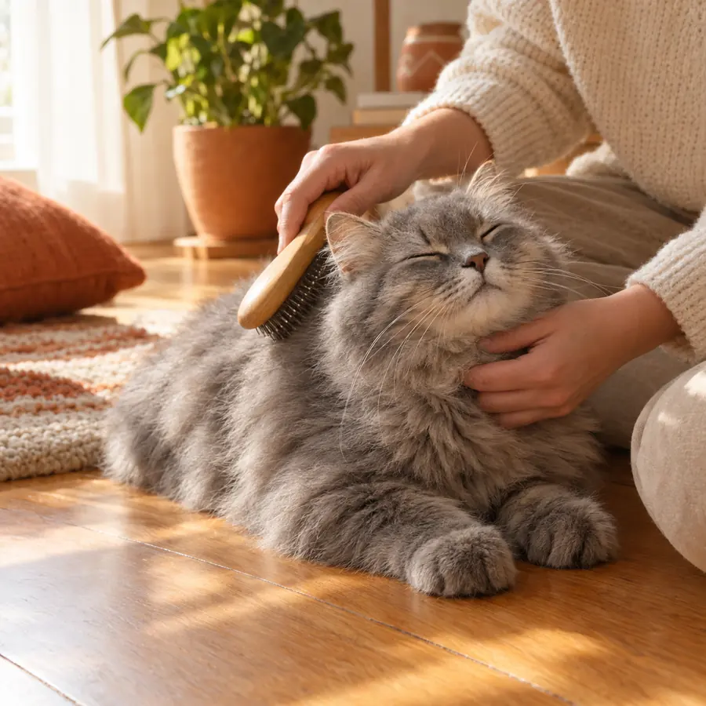

كشف وتطعيم ورعاية، بهدوء ودون استعجال. حيوانك الأليف عندنا ليس مجرد حالة، بل فرد من العائلة.
تحدّث إلى المساعد في أسفل الصفحة، وسيثبّت لك موعدًا تجريبيًا في دقيقة.
بلا انتظار ولا زحام. أحضر أي تحاليل أو تطعيمات سابقة إن وُجدت.
نتصل بك لنطمئن على حالته، وتصلك التعليمات واضحة ومكتوبة.
من الكشف الدوري إلى التطعيمات والمتابعة، نعمل بهدوء وتعقيم كامل، ونشرح لك كل شيء خطوة بخطوة.
فحص كامل من الرأس إلى الذيل، وخطة علاج واضحة إن احتاج الأمر لمتابعة.
التطعيمات الأساسية والسنوية للقطط والكلاب، مع شهادة بكل جرعة.
معمل وأشعة داخل العيادة، والنتيجة في اليوم نفسه بلا عناء.
غرفة عمليات مجهزة وتعقيم كامل، ومتابعة يومية حتى يتعافى بالسلامة.
حمّام طبي وقص شعر وأظافر وتنظيف أذن، بلا توتر ولا إزعاج.
يأتيك الطبيب إلى البيت داخل المعادي وما حولها، بحجز مسبق.

١٤ سنة في المهنة، وأكثر من يتصل به أصحاب الكلاب الكبيرة قبل أي قرار.
متخصصة في حالات القطط الحساسة، ومعروف أن القطط الخائفة تهدأ معها.

حتى لو لم ينزل حيوانك من البيت، قد تصله الأمراض من حذائك. ثبّت موعد التطعيم كل سنة.
إن قلّت شهيتها أو انعزلت كثيرًا، فهذا غالبًا إنذار. الكشف المبكر أرخص وأسهل بكثير.
الصيف عندنا قاسٍ. اخرج مبكرًا أو ليلًا، وجرّب الأرض بيدك أولًا: إن كانت ساخنة عليك فهي ساخنة على كفوفه.
أي تغيير في الطعام يكون تدريجيًا على أسبوع، وإلا ستواجه معدة مضطربة.
أول مرة لا تخاف فيها قطتي عند الطبيب. المكان هادئ، والدكتورة سارة صبورة جدًا وشرحت لي كل شيء.
أجرى روكي عملية عند د. كريم، وكانت المتابعة بعدها أفضل من مستشفيات بشرية جرّبتها.
اتصلت بهم في الثانية فجرًا حين تعب بونبون، فردّوا فورًا وقالوا تعالي حالًا. كان ذلك الفارق.
عبر المساعد أسفل الصفحة في أقل من دقيقة، أو بالهاتف. إن كانت الحالة طارئة فلا تنتظر موعدًا: توجّه فورًا إلى أقرب طبيب بيطري.
لا يؤكد هذا العرض وجود خدمة طوارئ أو رقم طوارئ. إن كانت الحالة طارئة، توجّه فورًا إلى أقرب طبيب بيطري أو عيادة طوارئ.
نستقبل العصافير والأرانب والسلاحف والهامستر ومعظم الحيوانات الأليفة الصغيرة. وإن كان لديك حيوان مختلف، اسألنا أولًا.
نقدًا أو فودافون كاش أو إنستاباي في العيادة. لا دفعة مقدمة للحجز العادي، وتدفع بعد الكشف.